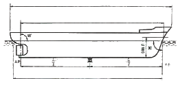
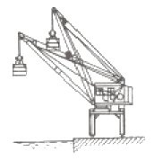
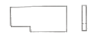
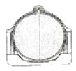
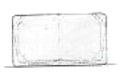
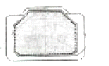
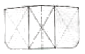
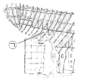
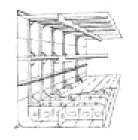
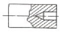

선체건조기능사 (2012-07-22 기출문제)
1과목: 조선공학일반
1. 다음 중 선박의 선미관 베어링으로 사용되는 나무는?
- 미송나무
- 참나무
- 박달나무
- 리그넘바이티
(정답률: 알수없음)

2. 다음 중 물에 떠 있는 선박의 무게를 알기위하여 가장 필요한 것은?
- 배수량
- 선형계수
- 부심위치
- 무게중심
(정답률: 알수없음)
3. 선박 하부의 수심을 측정하는 장치는?
- 레이더
- 로그
- 나침의
- 음향측심기
(정답률: 알수없음)
4. 선박의 운동 중 나머지 셋과 그 성격이 다른 하나는?
- 횡요(rolling)
- 종요(pitching)
- 선수동요(yawing)
- 상하동요(heaving & dipping)
(정답률: 알수없음)
5. 일반적으로 수조 모형시험 시 얻을 수 있는 저항값에서 추정 및 계산할 수 있는 저항이 아닌 것은?
- 조파저항
- 마찰저항
- 잉여저항
- 풍압면적에 의한 저항
(정답률: 알수없음)
6. 다음 중 데릭 포스트에서 가장 윗부분에 있는 것은?
- 브래킷
- 토핑브래킷
- 클리트
- 구스넥 브래킷
(정답률: 알수없음)
7. 화물선내의 화물을 가로방향으로 옮겼을 때 변하지 않는 것은?
- 배수량
- 부심
- 홀수선
- 무게중심
(정답률: 알수없음)
8. 선박의 부심과 횡메타센터의 수직거리를 무엇이라 하는가?
- 부심 높이
- 횡메타센터 높이
- 횡메타센터 반지름
- 횡메타센터 지름
(정답률: 알수없음)
9. 복원력을 계산하는 식으로 옳은 것은?
- 배수량 – 복원정
- 배수량 × 복원정
- 배수량 ÷ 복원정
- 배수량 + 복원정
(정답률: 알수없음)
10. 면적을 구하는 공식 중 간격이 3배수 등간격 조건에서만 사용 가능한 것은?
- 사다리꼴 법칙
- 심프슨 제1법칙
- 심프슨 제2법칙
- 체비셰프의 법칙
(정답률: 알수없음)
11. 광석, 벌크, 원유를 운반하는 겸용선을 나타낸 것은?
- O/B/O
- O/O
- VLCC
- Lo-Lo
(정답률: 알수없음)
12. 그림과 같은 선박에서 길이가 가장 긴 것은?

- 등록길이
- 수선길이
- 전체길이
- 건형용 길이
(정답률: 알수없음)
13. 모형선의 길이 3.61m, 속도 1.9노트(knot)일 때 길이가 36m인 실선의 속도는 몇 노트인가?
- 3.16
- 6
- 19
- 190
(정답률: 알수없음)
14. 다음 중 선수부에 설치되지 않는 장치는?
- 윈드라스(Windlass)
- 카고 윈치(Cargo winch)
- 페어 리더(Fair leader)
- 앵커 리세스(Anchor recess)
(정답률: 알수없음)
15. 타두재(Rudder stock), 기관의 추진축 등에 주로 사용되는 강재는?
- 단강재
- 주철재
- 주강재
- 압연강재
(정답률: 알수없음)
16. 다음 중 선박의 주기관에 속하지 않는 것은?
- 증기터빈
- 발전기
- 가스터빈
- 디젤기관
(정답률: 알수없음)
17. 선박의 중앙에서 형 홀수에 대한 설명으로 옳은 것은?
- 기선에서 상갑판까지의 거리
- 용골의 하면에서 수면까지의 수직 거리
- 용골의 상면에서 수면까지의 수직 거리
- 최상층 전통갑판에서 기선까지의 수직 거리
(정답률: 알수없음)
18. 기관의 기계효율을 구하는 식은? (단, BHP : 제동마력, IHP : 지시마력, EHP : 유효마력, THP : 추력마력, DHP : 전달마력)
- BHP ÷ IHP
- EHP ÷ THP
- DHP ÷ BHP
- BHP ÷ DHP
(정답률: 알수없음)
19. 가스터빈을 사용하는 추진장치 계통에 반드시 필요한 장치가 아닌 것은?
- 감속장치
- 역전장치
- 수분분리장치
- 복수장치
(정답률: 알수없음)
20. 선박의 횡동요를 감소시키는 장치가 아닌 것은?
- 핀 안정기
- 감요 수조
- 구상 선수
- 만곡부 용골
(정답률: 알수없음)
2과목: 선박건조
21. 두께 2mm의 연강판으로 바깥지름 150mm의 원통을 제작할 때 마름질할 판의 길이는 약 몇 mm 인가?
- 459
- 465
- 471
- 477
(정답률: 알수없음)
22. 선체 블록의 탑재 개시점을 2곳 이상 택하여 탑재하는 방법으로서 출발 시기는 약간 다르더라도 각각의 조별로 공사를 실시하고 최후에 대형 블록을 결합시키는 방법은?
- 층식 건조법
- 다점 건조법
- 사다리꼴 건조법
- 상형 건조법
(정답률: 알수없음)
23. 안전표지의 종류 중 위험한 행동을 금지하는데 사용되는 표지는?
- 방화 표지
- 금지 표지
- 위험 표지
- 구호 표지
(정답률: 알수없음)
24. 용접 결함의 종류가 아닌 것은?
- 언더컷
- 기공
- 오버랩
- 코킹다운
(정답률: 알수없음)
25. 탑재할 블록을 크레인으로 옮기거나 들어 올릴 때 편리하도록 블록에 임시로 부착하는 부재는?
- 링 볼트(Ring bolt)
- 링 플레이트(Ring plate)
- 아이 플레이트(Eye plate)
- 프리이렉션(Pre erection)
(정답률: 알수없음)
26. 조선소 작업 중 폭발 방지를 위한 행동이 아닌 것은?
- 탱크 내부 도장 작업 시 방폭등을 사용한다.
- 밀폐된 곳의 도장 작업 시 반드시 환기시설을 갖춘다.
- 탱크내부 절단 작업 중 작업시간이 종료되면 절단기를 그대로 두고 철수한다.
- 도장 작업 시 피복이 벗겨진 전선은 사용하지 않는다.
(정답률: 알수없음)
27. 조선소 내의 설비 계획시 고려해야 할 사항으로 틀린 것은?
- 간접비가 적게 들도록 할 것
- 운반 시간이 절약됟록 할 것
- 정밀도와 품질이 확실히 유지될 수 있을 것
- 기술의 연계성과 이전을 위해 쉽게 변화할 수 없도록 할 것
(정답률: 알수없음)
28. 연삭기 작업시 주의해야할 사항으로 틀린 것은?
- 연삭기는 안전 덮개를 반드시 해야 한다.
- 보안경을 착용하고 숫돌의 측면에 서서 해야 한다.
- 연삭 숫돌을 끼우기 전에 균열 유무를 조사해야 한다.
- 작업능률을 향상하기 위하여 최대 속도로 회전시켜야 한다.
(정답률: 알수없음)
29. 그림과 같은 크레인의 명칭은?

- T형 크레인
- 교각 지브 크레인
- 플로팅 크레인
- 코로바스 지브 크레인
(정답률: 알수없음)
30. 조선소의 입지조건에 대한 설명으로 틀린 것은?
- 주요 자재의 구입이 편리하여야 한다.
- 필요한 노동력을 쉽게 얻을 수 있어야 한다.
- 용접 등의 열간작업이 많으므로 작업조건을 위해서 강우량이 많아야 한다.
- 조선소의 규모에 적합한 해안선을 가지고 있는 항구에 위치해야 한다.
(정답률: 알수없음)
31. 쇼트 블라스트(Shot blast)에 대한 설명으로 옳은 것은?
- 황산, 염산 등으로 강판을 세척하는 방법이다.
- 강판의 비틀림, 처짐 등의 변형을 교정하는 작업이다.
- 산탄을 강판 표면에 고속으로 분사하여 그 충격작용에 의하여 녹을 제거하는 방법이다.
- 모래를 강판 표면에 고속으로 분사하여 그 충격작용에 의하여 녹을 제거하는 방법이다.
(정답률: 알수없음)
32. 가로 진수의 장점이 아닌 것은?
- 강이나 좁은 수로에서도 진수가 가능하다.
- 용골을 수평하게 놓을 수 있으므로 선체 조립이 간편하다.
- 진수대가 세로 진수에 비하여 복잡하지 않고 소요비용도 적게 든다.
- 세로 진수보다 경사가 작아 진수시 무게 중심 높이, 개구 부분의 침수의 부담이 적다.
(정답률: 알수없음)
33. 선내의 고인 불필요한 물이나 갑판부에서 새어나온 물, 기름 등을 한 곳으로 모아 선박 밖으로 배출하는 펌프는?
- 빌지 펌프
- 해수 펌프
- 위생 펌프
- 급수 펌프
(정답률: 알수없음)
34. 선박의 세로 진수 시 선박이 미끄러져 내려가는 도중에 미끄럼대가 옆으로 벗어나는 것을 막아주는 장치는?
- 트리거
- 도그쇼어
- 선수미 포핏
- 리브 밴드
(정답률: 알수없음)
35. 블록(Block)을 구성하는 강판 등의 부재를 윤곽잡기 마킹한 후 용접이 완료된 후에 프레임선, W.L., B.L., 절단선 등을 정확히 표시하는 마킹은?
- 다듬질 마킹
- 블록 마킹
- 코루게이트 마킹
- 현장 마름질 본 마킹
(정답률: 알수없음)
36. 탑재공사에서 탑재 단위별 블록이나 구조 부재를 정규 위치에 놓고 배의 형상을 정확하게 형성해 나가는 작업은?
- 다듬질
- 선형 결정짓기
- 블록 탑재
- 반목쌓기와 선체지지
(정답률: 알수없음)
37. 그림과 같은 조립용 지그(Jig)의 명칭은?

- 눈틀림 고치기
- 문형 피스
- 꺾임방지 브라켓
- 턴버클 피스
(정답률: 알수없음)
38. 산형강(Angle steel)의 변형 교정에 가장 적합한 가열 방법은?
- 삼각가열
- 점가열
- 선상가열
- 적열법
(정답률: 알수없음)
39. 일반 피복아크용접봉의 피복제 기능으로 틀린 것은?
- 탈산, 정련작용을 한다.
- 아크(arc)를 안정하게 한다.
- 용융점이 높은 슬래그를 만든다.
- 대기중의 다른 원소 침입을 만든다.
(정답률: 알수없음)
40. 강판을 가스로 절단할 때 변형을 방지하는 방법이 아닌 것은?
- 피절단재를 고정시키는 방법
- 수냉에 의하여 열을 제거하는 방법
- 국부적으로 갑자기 가열하여 절단하는 방법
- 절단부분과 대칭되는 판의 가장 자리를 먼저 예열시켜 열의 평형을 유지시키는 방법
(정답률: 알수없음)
3과목: 선박구조 및 조선제도
41. 선체의 횡강도를 증가시키는 방법으로 옳은 것은?
- 갑판 면적을 증가시킨다.
- 종통재를 많이 사용한다.
- 용골의 단면적을 증가시킨다.
- 횡늑골 사이의 간격을 좁게 한다.
(정답률: 알수없음)
42. MOSS형 LNG선의 횡단면 구조를 나타낸 것은?




(정답률: 알수없음)
43. 선박의 반폭선도에서 수직선으로 나타나는 것은?
- 수선
- 불워크선
- 버톡선
- 갑판현측선
(정답률: 알수없음)
44. 우리나라의 조선소에서 사용하고 있는 CAD시스템이 아닌 것은?
- ORCAD
- TRIBON
- AUTOCAD
- AUTOKON
(정답률: 알수없음)
45. 그림과 같은 선미구조에서 ㉠의 명칭은?

- 브래킷
- 트랜섬늑판
- 갑판거더
- 터널리세스
(정답률: 알수없음)
46. 방현재(fender)가 설치되는 곳은?
- 선축 외판
- 선수루
- 선저 외판
- 빌지 외관
(정답률: 알수없음)
47. 그림과 같은 선체구조양식은?

- 횡식 구조
- 혼합식 구조
- 종식 구조
- 이셔우드식 구조
(정답률: 알수없음)
48. 선수재 중 보강보의 윗면에서 외판에 접하여 설치되는 종방향의 특설부재는?
- 심늑판
- 팬팅 스트링어
- 브레스트 훅
- 패션 플레이트
(정답률: 알수없음)
49. 선박이 능파성을 갖게 함과 동시에 조타 장치를 보호하기 위하여 설치되는 선루는?
- 선수루
- 선미루
- 저선루
- 선교루
(정답률: 알수없음)
50. 선박에서 주선체를 구성하는 최상층의 전통갑판은?
- 복갑판
- 선루갑판
- 삼갑판
- 제2갑판
(정답률: 알수없음)
51. 선박 제도 시 일반적인 약속에 관한 설명으로 틀린 것은?
- 도면은 우현에서 좌현으로 본 기준으로 그린다.
- 선수가 오른쪽, 선미가 왼쪽으로 되도록 그린다.
- 상선, 유조선, 화물선 등은 모두 선미쪽에서부터 늑골번호를 부여한다.
- 좌우 양현의 구조가 대칭인 경우 한쪽만 그리고 우현만(S-only) 이라고 명기한다.
(정답률: 알수없음)
52. 다음 중 이중저 구조 부재가 아닌 것은?
- 마진판
- 내저판
- 내용골
- 중심선 거더
(정답률: 알수없음)
53. 제수격벽 또는 제수판(Wash plate)을 설치하는 목적은?
- 액체의 유출을 막기 위하여
- 액체의 동요를 줄이기 위하여
- 화물의 중량을 줄이기 위하여
- 선체의 중량을 줄이기 위하여
(정답률: 알수없음)
54. 제도에서 가는 실선으로 표시하는 것이 아닌 것은?
- 지시선
- 절단선
- 치수선
- 치수보조선
(정답률: 알수없음)
55. 일반배치도에 표시되는 F.O.T 의 의미는?
- 선미수창
- 급수탱크
- 연료유탱크
- 청수탱크
(정답률: 알수없음)
56. 선체의 구조 중 캠버에 대한 설명으로 옳은 것은?
- 선저의 경사진 상태
- 선체 측면의 상부가 안쪽으로 굽은 상태
- 건현 갑판 현측선이 선체 전후 방향으로 휘어진 것
- 횡단면상에서 갑판보가 선체 중심선에서 양현으로 휘어진 것
(정답률: 알수없음)
57. 외판전개도에 나타내는 것이 아닌 것은?
- 만곡부 욜골
- 늑골의 배치와 치수
- 해치코밍 배치와 치수
- 블록 이음과 판의 두께
(정답률: 알수없음)
58. 기관실의 구조에 대한 설명으로 틀린 것은?
- 부식 때문에 내저판의 판 두께를 증가시킨다.
- 실체 늑판의 수를 늘려 배치하고 측거더의 수도 증설한다.
- 기관실의 출입구는 강제 문으로 주위가 폐쇄딘 장소에 설치한다.
- 상부 상갑판에는 기관실로의 해수 침입을 막기위해 밀폐구조로 한다.
(정답률: 알수없음)
59. 선체 선도에서 사용하는 주요 치수와 약자를 짝지은 것으로 틀린 것은?
- Dmld - 형깊이
- L.O.A - 전 길이
- L.P.P - 수선 간 길이
- D.L.W.L - 설계 계획 수선
(정답률: 알수없음)
60. 그림과 같은 단면도는 어떤 단면도인가?

- 부분 단면도
- 반 단면도
- 곡면 단면도
- 계단 단면도
(정답률: 알수없음)